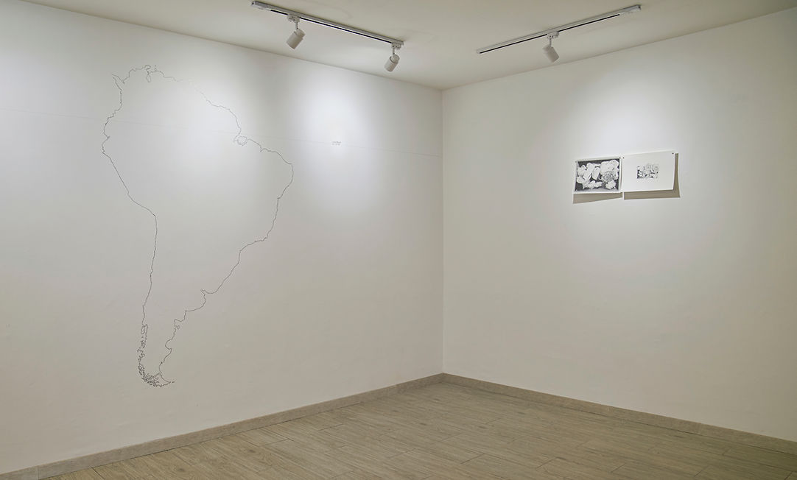
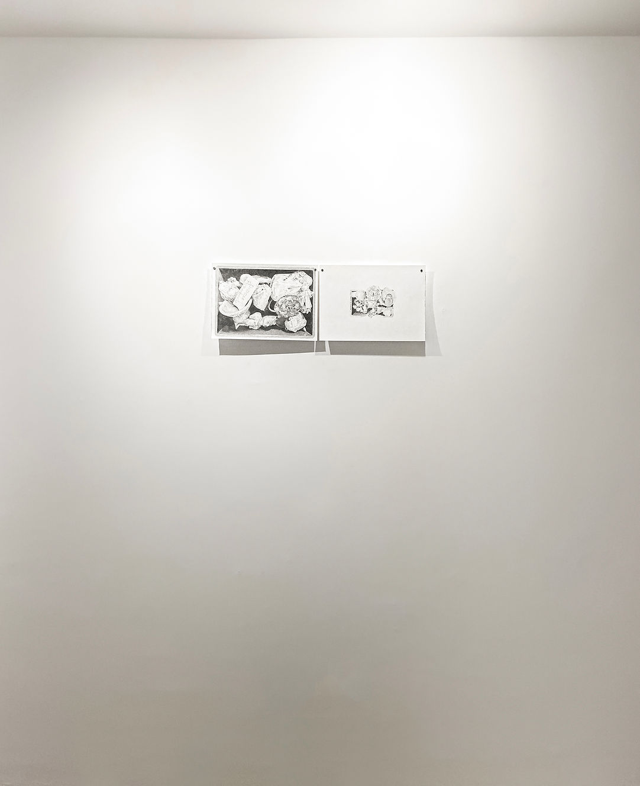
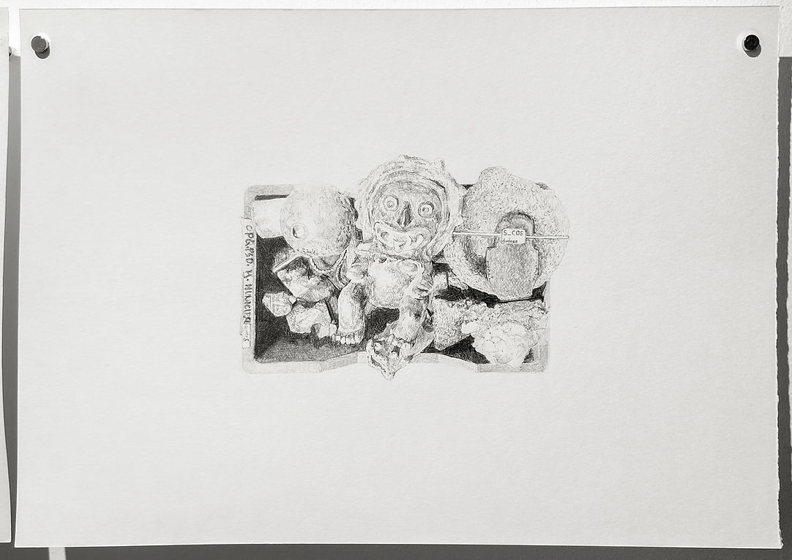
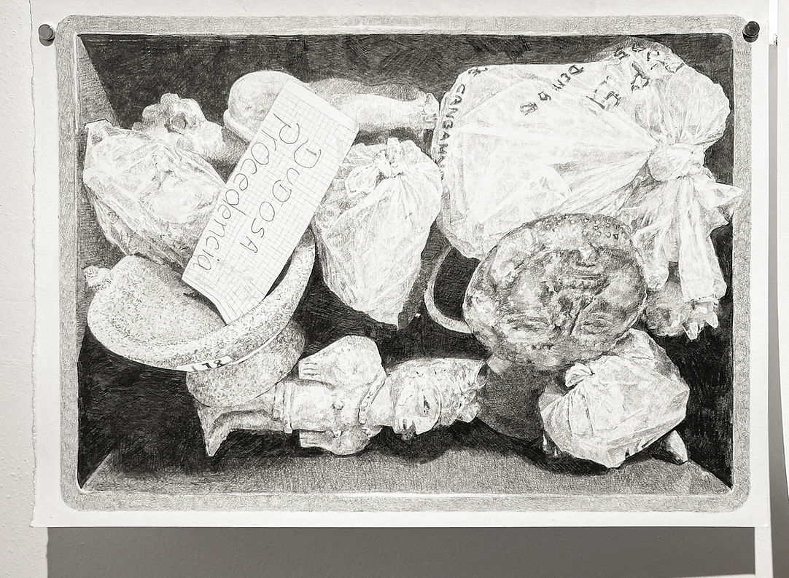
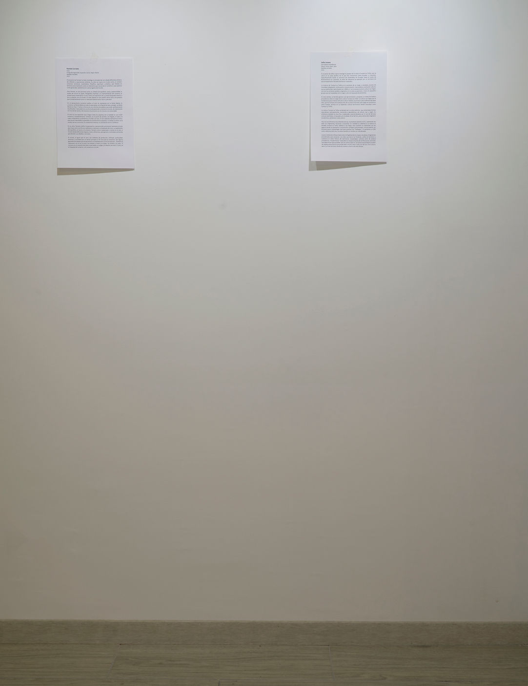

de dudosa procedencia
1 al 29 de Octubre del 2023.
Residencia en No Lugar, Quito, Ecuador.
El proyecto de Sofía Lozano investiga el pasado de la cultura Tumaco-La Tolita, que se ubicó en la costa pacífica de lo que hoy conocemos como Ecuador y Colombia, específicamente desde la provincia de Esmeraldas en Ecuador hasta el norte de Buenaventura en Colombia. Su área de influencia se extendió por un territorio de aproximadamente 250.000 kilómetros cuadrados.
La historia de Tumaco-La Tolita es el resultado de un largo y complejo proceso de movilidad, adaptación, continuación, transformación, intercambios y evolución cultural, que se podría decir que empezó en c.9000 a.C con la presencia de la cultura Las Vegas, uno de los primeros pueblos originarios en la costa ecuatoriana, vivían en pequeños grupos que se trasladaban de un lugar a otro en búsqueda de alimentos.
En este sentido, es factible generar una aproximación y proponer un relato de dudosa procedencia sobre el origen de la cultura Tumaco-La Tolita: La cultura Las Vegas son el fundamento para el desarrollo de la cultura Valdivia, la primera cultura alfarera del Abya Yala, que fue la base para el desarrollo de la cultura Chorrera, que luego se convirtió en Jama Coaque, quienes en su esplendor cultural terminaron siendo conocidos como Tumaco-La Tolita.
Hoy nos encontramos muy distantes de eso, el presente colonial y el d.C. solamente nos dejó con fragmentos, ficciones o recuerdos. En realidad no sabemos si la cultura se llamaba Tumaco-La Tolita, Valdivia o Las Vegas, esos nombres se relacionan con los lugares donde se saquearon o encontraron vestigios precoloniales, incluso podrían ser ficciones que la arqueología creó para justificar sus “hallazgos”. Si usaramos un GPS como referencia del sitio, la cultura tendría un nombre en coordenadas.
Lozano mediante el dibujo habla sobre la fragilidad de los mapas, las piezas y fragmentos precoloniales para proponer una obra que borra las fronteras, unifica el territorio y cuestiona el relato ficticio del patrimonio arqueológico colonial como de dudosa procedencia, ”el patrimonio” responde a un largo protocolo de verificaciones coloniales que determinan qué se exhibe, qué se cuenta y qué no. Las piezas arqueológicas pueden ser objetos anacrónicos que pueden decir mucho o decir nada, son de una u otra cultura, pero a la final terminan siendo de nuestra cultura y de este tiempo.
Rubén Díaz Chavez.
Este proyecto se desarrolló en la residencia de No Lugar, Quito, Ecuador del 1 al 29 de Octubre del 2023.

Dibujo. Pared. Papel. Lápiz. Medidas Variables. 2023

Dibujo. Pared. Papel. Lápiz. Medidas Variables. 2023


Serie de dibujos. Lápiz sobre papel. Medidas Variables. 2023

Texto de sala.